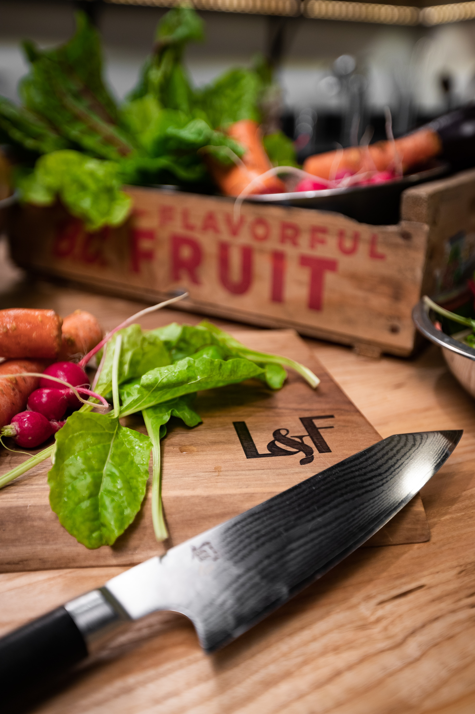

About Us
Keto Gen provides you a enjoyable experience and gives the healthy diet that inspires you to make your own meal at home. Ketogenic, the term itself, might be unfailiar with for some people.
“Ketogenic” is a term for a low-carb diet. The idea is for you to get more calories from protein and fat and less from carbohydrates. You cut back most on the carbs that are easy to digest, like sugar, soda, pastries, and white bread.
We serve most entree with lots of fresh vegetables, fruits, and less salted meats. The experience will give you that you can have a decent meal without carbohydrates.